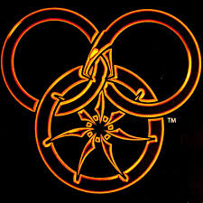

Bienvenue sur ma page ! Je suis doctorante à l'Université de Bordeaux, sous la supervision de Elena Berardini , Xavier Caruso et Jade Nardi . Mes thèmes de recherche portent sur la théorie des codes et la géométrie algébrique. Je suis aussi intéressée par la cryptographie, le calcul formel et plus généralement par la théorie algorithmique des nombres.

Adresse mail : gurwane.pape@math.u-bordeaux.fr